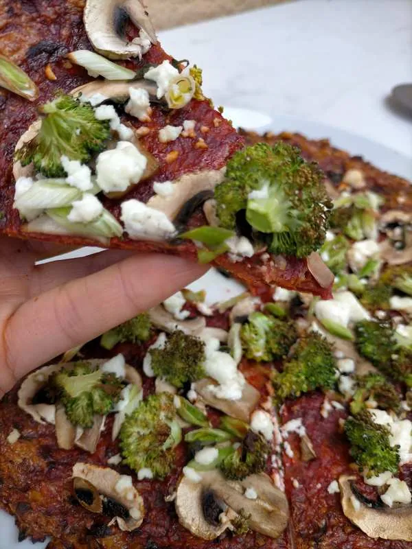

Hoy no sabía qué comer, y al abrir la nevera he visto unas remolachas cocidas que dejé abiertas el otro día y se me ha ocurrido probar de hacer una pizza con masa de remolacha.
¡Y bendita la hora! Me ha encantado. La base ha quedado firme y super sabrosa, y de toppings le he puesto tomate concentrado, brócoli, champiñones, ajo tierno y queso feta con unas hojitas de menta fresca y la combinación ha sido ESPECTACULAR.
Evidentemente cada uno puede ponerle lo que más le guste, pero el feta y la menta son dos ingredientes ideales para combinar con la remolacha, por lo que os aconsejo que, si os gustan, la probéis.

Pizza con masa de remolacha
INGREDIENTES
1 remolacha cocida
1 huevo
Queso rallado (yo he combinado queso proteico EatLean con Grana Padano)
Sal
PREPARACIÓN
Precalentamos el horno a 220º con calor arriba y abajo.
Rallamos la remolacha y, con un colador o una gasa o muselina, exprimimos bien para que suelte la mayor cantidad posible de líquido.
Mezclamos la remolacha con el huevo, una pizca de sal y vamos añadiendo queso rallado hasta que la masa compacte y pueda moldearse.
Ponemos la masa en la bandeja de horno forrada con papel vegetal y la extendemos bien con los dedos formando una capa fina y dándole forma a nuestra pizza.
Horneamos durante 15 minutos. Sacamos del horno, ponemos los toppings que más nos gusten y devolvemos al horno por otros 10 o 15 minutos, hasta que los toppings estén listos y la masa esté dorada y crujiente por los bordes.
Servimos nuestra pizza con masa de remolacha recién sacada del horno.